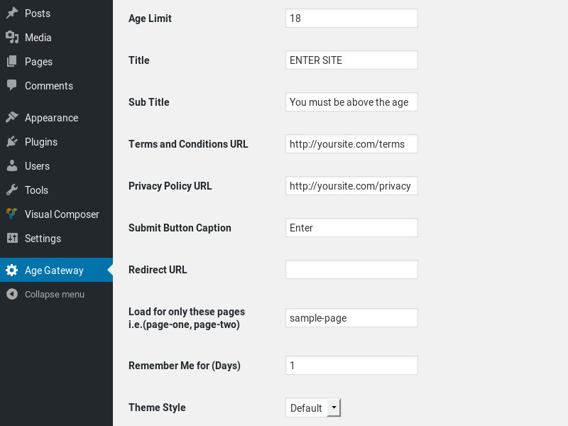

A very simple and effective wordpress plugin to help protect sensitive content from being viewed by users that are under the eligible age. Comes with all countries with age limits included, the user simply selects their country and the age limit is automatically set. Add this age gateway to any post or page using the shortcode [age-gateway] and restrict which pages it should appear on.
Thank you for purchasing my theme. If you have any questions that are beyond the scope of this help file, please feel free to email via my deswdesigner@gmail.com. Thanks so much!
For a quick start install the plugin in your wordpress website and Activate it. This will install and make all the default configurations. Once the plugin has been installed and activated, a menu will be created called Age-Gateway. This is where you will find all the configurations you need to manage your age gateway, provide the following information accordingly or as you see fit.
This if the default age limit the gateway will use regardless of whether the user selects a country or not. Leave this field blank if you want the user to have the flexibility of using their country’s mandatory age limit.

You can add the shortcode to any page or post using Add Age-Gateway Button by opening the page in edit mode, click the Add Age-Gateway Button a shortcode similar to the one below will be added to your post or page. Make sure to update the changes in order for the age gateway form to be displayed on the post or page for users.
[age-gateway]
The form template structured can be inserted any where in your html code. However for the purposes of illustration this form is wrapped in the div with id age-gate-way-overlay. The div with class age_gate_way is used to define the size and position of the form.
<div class="age-gate-way-overlay age-gate-way-none">
<div id="age_gate_way" style="display: block; opacity: 1; visibility: visible; top: 10px;">
<div class="border_wrap">
<form name="age_gateway" method="post">
<div class="age-gate-way-form">
<input name="post_type" class="post-type" type="hidden" value="Email" />
<!-- BEGIN FORM SECTIONS -->
<div class="age-gate-way-form-section" section="Age GateWay">
<h2>%1$s</h2>
<h4>%2$s</h4>
<div id="age-gate-way-err"></div>
</div>
<div class="age-gate-way-form-section" section="Age Selection">
<div class="age-gate-way-option">
<div class="age-gate-way-holder">
<select name="day" id="dd" placeholder="Day" data="required">
<option value="">Day</option>
<option value="01">01</option>
<option value="02">02</option>
<option value="03">03</option>
<option value="04">04</option>
<option value="05">05</option>
<option value="06">06</option>
<option value="07">07</option>
<option value="08">08</option>
<option value="09">09</option>
<option value="10">10</option>
<option value="11">11</option>
<option value="12">12</option>
<option value="13">13</option>
<option value="14">14</option>
<option value="15">15</option>
<option value="16">16</option>
<option value="17">17</option>
<option value="18">18</option>
<option value="19">19</option>
<option value="20">20</option>
<option value="21">21</option>
<option value="22">22</option>
<option value="23">23</option>
<option value="24">24</option>
<option value="25">25</option>
<option value="26">26</option>
<option value="27">27</option>
<option value="28">28</option>
<option value="29">29</option>
<option value="30">30</option>
<option value="31">31</option>
</select>
</div>
</div>
<div class="age-gate-way-option">
<div class="age-gate-way-holder">
<select name="day" id="mm" placeholder="Month" data="required">
<option value="">Month</option>
<option value="01">January</option>
<option value="02">February</option>
<option value="03">March</option>
<option value="04">April</option>
<option value="05">May</option>
<option value="06">June</option>
<option value="07">July</option>
<option value="08">August</option>
<option value="09">September</option>
<option value="10">October</option>
<option value="11">November</option>
<option value="12">December</option>
</select>
</div>
</div>
<div class="age-gate-way-option">
<div class="age-gate-way-holder">
<select name="day" id="yyyy" placeholder="Year" data="required">
<option value="">Year</option>
<option value="2014">2014</option>
<option value="2013">2013</option>
<option value="2012">2012</option>
<option value="2011">2011</option>
<option value="2010">2010</option>
<option value="2009">2009</option>
<option value="2008">2008</option>
<option value="2007">2007</option>
<option value="2006">2006</option>
<option value="2005">2005</option>
<option value="2004">2004</option>
<option value="2003">2003</option>
<option value="2002">2002</option>
<option value="2001">2001</option>
<option value="2000">2000</option>
<option value="1999">1999</option>
<option value="1998">1998</option>
<option value="1997">1997</option>
<option value="1996">1996</option>
<option value="1995">1995</option>
<option value="1994">1994</option>
<option value="1993">1993</option>
<option value="1992">1992</option>
<option value="1991">1991</option>
<option value="1990">1990</option>
<option value="1989">1989</option>
<option value="1988">1988</option>
<option value="1987">1987</option>
<option value="1986">1986</option>
<option value="1985">1985</option>
<option value="1984">1984</option>
<option value="1983">1983</option>
<option value="1982">1982</option>
<option value="1981">1981</option>
<option value="1980">1980</option>
<option value="1979">1979</option>
<option value="1978">1978</option>
<option value="1977">1977</option>
<option value="1976">1976</option>
<option value="1975">1975</option>
<option value="1974">1974</option>
<option value="1973">1973</option>
<option value="1972">1972</option>
<option value="1971">1971</option>
<option value="1970">1970</option>
<option value="1969">1969</option>
<option value="1968">1968</option>
<option value="1966">1966</option>
<option value="1965">1965</option>
<option value="1964">1964</option>
<option value="1963">1963</option>
<option value="1962">1962</option>
<option value="1961">1961</option>
<option value="1960">1960</option>
<option value="1959">1959</option>
<option value="1958">1958</option>
<option value="1957">1957</option>
<option value="1956">1956</option>
<option value="1955">1955</option>
<option value="1954">1954</option>
<option value="1953">1953</option>
<option value="1952">1952</option>
<option value="1951">1951</option>
<option value="1950">1950</option>
<option value="1949">1949</option>
<option value="1948">1948</option>
<option value="1947">1947</option>
<option value="1946">1946</option>
<option value="1945">1945</option>
<option value="1944">1944</option>
<option value="1943">1943</option>
<option value="1942">1942</option>
<option value="1941">1941</option>
<option value="1940">1940</option>
<option value="1939">1939</option>
<option value="1938">1938</option>
<option value="1937">1937</option>
<option value="1936">1936</option>
<option value="1935">1935</option>
<option value="1934">1934</option>
<option value="1933">1933</option>
<option value="1932">1932</option>
<option value="1931">1931</option>
<option value="1930">1930</option>
<option value="1929">1929</option>
<option value="1928">1928</option>
<option value="1927">1927</option>
<option value="1926">1926</option>
<option value="1925">1925</option>
<option value="1924">1924</option>
<option value="1923">1923</option>
<option value="1922">1922</option>
<option value="1921">1921</option>
<option value="1920">1920</option>
</select>
</div>
</div>
</div>
<div class="age-gate-way-form-clear"></div>
<div class="age-gate-way-form-section" section="Country Selection">
<div class="age-gate-way-holder">
<select name="country" id="country" placeholder="Country" data="required">
<option value="AX">Åland Islands</option>
<option value="AF">Afghanistan</option>
<option value="AL">Albania</option>
<option value="DZ">Algeria</option>
<option value="AS">American Samoa</option>
<option value="AD">Andorra</option>
<option value="AO">Angola</option>
<option value="AI">Anguilla</option>
<option value="AQ">Antarctica</option>
<option value="AG">Antigua And Barbuda</option>
<option value="AR">Argentina</option>
<option value="AM">Armenia</option>
<option value="AW">Aruba</option>
<option value="AU">Australia</option>
<option value="AT">Austria</option>
<option value="AZ">Azerbaijan</option>
<option value="BS">Bahamas</option>
<option value="BH">Bahrain</option>
<option value="BD">Bangladesh</option>
<option value="BB">Barbados</option>
<option value="BY">Belarus</option>
<option value="BE">Belgium</option>
<option value="BZ">Belize</option>
<option value="BJ">Benin</option>
<option value="BM">Bermuda</option>
<option value="BT">Bhutan</option>
<option value="BO">Bolivia</option>
<option value="BQ">Bonaire, Sint Eustatius and Saba</option>
<option value="BA">Bosnia And Herzegovina</option>
<option value="BW">Botswana</option>
<option value="BR">Brazil</option>
<option value="BN">Brunei</option>
<option value="BG">Bulgaria</option>
<option value="BF">Burkina Faso</option>
<option value="BI">Burundi</option>
<option value="KH">Cambodia</option>
<option value="CM">Cameroon</option>
<option value="CA">Canada</option>
<option value="CV">Cape Verde</option>
<option value="KY">Cayman Islands</option>
<option value="CF">Central Africa</option>
<option value="TD">Chad</option>
<option value="CL">Chile</option>
<option value="CN">China</option>
<option value="HK">China (Hong Kong)</option>
<option value="CX">Christmas Island (Australia)</option>
<option value="CC">Cocos (Keeling) Islands (Australia)</option>
<option value="CO">Colombia</option>
<option value="KM">Comoros</option>
<option value="CD">Congo, Democratic Republic of the</option>
<option value="CG">Congo, Republic of the</option>
<option value="CK">Cook Islands</option>
<option value="CR">Costa Rica</option>
<option value="CI">Cote D\'ivoire</option>
<option value="HR">Croatia</option>
<option value="CU">Cuba</option>
<option value="CW">Curaçao</option>
<option value="CY">Cyprus</option>
<option value="CZ">Czech Republic</option>
<option value="DK">Denmark</option>
<option value="DJ">Djibouti</option>
<option value="DM">Dominica</option>
<option value="DO">Dominican Republic</option>
<option value="EC">Ecuador</option>
<option value="EG">Egypt</option>
<option value="SV">El Salvador</option>
<option value="GQ">Equatorial Guinea</option>
<option value="ER">Eritrea</option>
<option value="EE">Estonia</option>
<option value="ET">Ethiopia</option>
<option value="FK">Falkland Islands</option>
<option value="FO">Faroe Islands</option>
<option value="FJ">Fiji</option>
<option value="FI">Finland</option>
<option value="FR">France</option>
<option value="GF">French Guiana</option>
<option value="PF">French Polynesia</option>
<option value="TF">French Southern Territories</option>
<option value="GA">Gabon</option>
<option value="GE">Georgia</option>
<option value="DE">Germany</option>
<option value="GH">Ghana</option>
<option value="GI">Gibraltar (UK)</option>
<option value="GR">Greece</option>
<option value="GL">Greenland</option>
<option value="GD">Grenada</option>
<option value="GP">Guadaloupe (France)</option>
<option value="GU">Guam</option>
<option value="GT">Guatemala</option>
<option value="GG">Guernsey</option>
<option value="GN">Guinea</option>
<option value="GW">Guinea-Bissau</option>
<option value="GY">Guyana</option>
<option value="HT">Haiti</option>
<option value="HM">Heard Island & McDonald Islands</option>
<option value="VA">Holy See (Vatican City State)</option>
<option value="HN">Honduras</option>
<option value="HU">Hungary</option>
<option value="IS">Iceland</option>
<option value="IN">India</option>
<option value="IO">Indian Ocean Territory (UK)</option>
<option value="ID">Indonesia</option>
<option value="IR">Iran</option>
<option value="IQ">Iraq</option>
<option value="IE">Ireland</option>
<option value="IM">Isle Of Man</option>
<option value="IL">Israel</option>
<option value="IT">Italy</option>
<option value="JM">Jamaica</option>
<option value="JP">Japan</option>
<option value="JE">Jersey</option>
<option value="JO">Jordan</option>
<option value="KZ">Kazakhstan</option>
<option value="KE">Kenya</option>
<option value="KI">Kiribati</option>
<option value="KP">Korea, Democratic People\'s Republic of</option>
<option value="KR">Korea, Republic of</option>
<option value="KW">Kuwait</option>
<option value="KG">Kyrgyzstan</option>
<option value="LA">Lao People\'s Democratic Republic</option>
<option value="LV">Latvia</option>
<option value="LB">Lebanon</option>
<option value="LS">Lesotho</option>
<option value="LR">Liberia</option>
<option value="LY">Libya</option>
<option value="LI">Liechtenstein</option>
<option value="LT">Lithuania</option>
<option value="LU">Luxembourg</option>
<option value="MO">Macao</option>
<option value="MK">Macedonia</option>
<option value="MG">Madagascar</option>
<option value="MW">Malawi</option>
<option value="MY">Malaysia</option>
<option value="MV">Maldives</option>
<option value="ML">Mali</option>
<option value="MT">Malta</option>
<option value="MH">Marshall Islands</option>
<option value="MQ">Martinique (France)</option>
<option value="MR">Mauritania</option>
<option value="MU">Mauritius</option>
<option value="YT">Mayotte (France)</option>
<option value="MX">Mexico</option>
<option value="FM">Micronesia</option>
<option value="MD">Moldova</option>
<option value="MC">Monaco</option>
<option value="MN">Mongolia</option>
<option value="ME">Montenegro</option>
<option value="MS">Montserrat</option>
<option value="MA">Morocco</option>
<option value="MZ">Mozambique</option>
<option value="MM">Myanmar</option>
<option value="NA">Namibia</option>
<option value="NR">Nauru</option>
<option value="NP">Nepal</option>
<option value="NL">Netherlands</option>
<option value="NC">New Caledonia</option>
<option value="NZ">New Zealand</option>
<option value="NI">Nicaragua</option>
<option value="NE">Niger</option>
<option value="NG">Nigeria</option>
<option value="NU">Niue</option>
<option value="NF">Norfolk Island (Australia)</option>
<option value="MP">Northern Mariana Islands</option>
<option value="NO">Norway</option>
<option value="OM">Oman</option>
<option value="PK">Pakistan</option>
<option value="PW">Palau</option>
<option value="PS">Palestine, State of</option>
<option value="PA">Panama</option>
<option value="PG">Papua New Guinea</option>
<option value="PY">Paraguay</option>
<option value="PE">Peru</option>
<option value="PH">Philippines</option>
<option value="PN">Pitcairn Islands</option>
<option value="PL">Poland</option>
<option value="PT">Portugal</option>
<option value="PR">Puerto Rico</option>
<option value="QA">Qatar</option>
<option value="RE">Reunion</option>
<option value="RO">Romania</option>
<option value="RU">Russian Federation</option>
<option value="RW">Rwanda</option>
<option value="BL">Saint Barthélemy</option>
<option value="SH">Saint Helena (UK)</option>
<option value="KN">Saint Kitts And Nevis</option>
<option value="LC">Saint Lucia</option>
<option value="MF">Saint Martin (French Part)</option>
<option value="VC">Saint Vincent And The Grenadines</option>
<option value="PM">Saint-Pierre Et Miquelon</option>
<option value="WS">Samoa</option>
<option value="SM">San Marino</option>
<option value="ST">Sao Tome and Principe</option>
<option value="SA">Saudi Arabia</option>
<option value="SN">Senegal</option>
<option value="RS">Serbia, Republic of</option>
<option value="SC">Seychelles</option>
<option value="SL">Sierra Leone</option>
<option value="SG">Singapore</option>
<option value="SX">Sint Maarten (Dutch Part)</option>
<option value="SK">Slovakia</option>
<option value="SI">Slovenia</option>
<option value="SB">Solomon Islands</option>
<option value="SO">Somalia</option>
<option value="ZA">South Africa</option>
<option value="GS">South Georgia & S. Sandwich Islands</option>
<option value="SS">South Sudan</option>
<option value="ES">Spain</option>
<option value="LK">Sri Lanka</option>
<option value="SD">Sudan</option>
<option value="SR">Suriname</option>
<option value="SJ">Svalbard and Jan Mayen</option>
<option value="SZ">Swaziland</option>
<option value="SE">Sweden</option>
<option value="CH">Switzerland</option>
<option value="SY">Syria</option>
<option value="TW">Taiwan (China)</option>
<option value="TJ">Tajikistan</option>
<option value="TZ">Tanzania, United Republic of</option>
<option value="TH">Thailand</option>
<option value="GM">The Gambia</option>
<option value="TL">Timor-Leste</option>
<option value="TG">Togo</option>
<option value="TK">Tokelau (New Zealand)</option>
<option value="TO">Tonga</option>
<option value="TT">Trinidad And Tobago</option>
<option value="TN">Tunisia</option>
<option value="TR">Turkey</option>
<option value="TM">Turkmenistan</option>
<option value="TC">Turks And Caicos Islands</option>
<option value="TV">Tuvalu</option>
<option value="UG" selected="">Uganda</option>
<option value="UA">Ukraine</option>
<option value="AE">United Arab Emirates</option>
<option value="GB">United Kingdom</option>
<option value="US">United States</option>
<option value="UM">United States Minor Outlying Islands</option>
<option value="UY">Uruguay</option>
<option value="UZ">Uzbekistan</option>
<option value="VU">Vanuatu</option>
<option value="VE">Venezuela</option>
<option value="VN">Vietnam</option>
<option value="VG">Virgin Islands (UK)</option>
<option value="VI">Virgin Islands (USA)</option>
<option value="WF">Wallis and Futuna</option>
<option value="EH">Western Sahara</option>
<option value="YE">Yemen</option>
<option value="ZM">Zambia</option>
<option value="ZW">Zimbabwe</option>
</select>
</div>
</div>
<div class="age-gate-way-form-section" >
<p>By entering this site you agree to our <a href="%3$s">Terms & Conditions</a> |
<a href="%4$s">Privacy & Cookies Notice</a></p>
<p><input type="checkbox" id="remember" value="1" placeholder="Remember Me" data="" /> Use a cookie to remember me. Only check this if you are not using a shared computer.</p>
</div>
<!-- BEGIN FINAL SECTION -->
<div class="age-gate-way-form-section age-gate-way-final" section="">
<div class="age-gate-way-form-button">
<button class="age-gate-way-submit-data">%5$s</button>
</div>
</div>
<!-- END FINAL SECTION -->
</div>
</form>
</div>
</div>
</div>
There are six CSS files included in the package. The style.css file contains the white theme which is the default theme, and the dark theme;
- style.css
- dark.css
The style codes included in the diferent files are based on CSS3/HTML5 formating. If you would like to edit a specific section of the site, simply find the appropriate label in the CSS file, and then scroll down until you find the appropriate style that needs to be edited.
/* CSS Document */
.age_gate_way_wrap {
background: #efefef;
width: 100%;
height: 100vh;
text-align: center;
align-items: center;
justify-content: center;
}
#age_gate_way {
float:none;
position: relative;
background: #fff;
margin: 0 auto;
width: 40%;
padding: 1%;
box-shadow: 0 0 25px -5px #888888;
border-radius: 10px ;
}
.age-gate-way-form h2{
font-size: 42px;
font-weight: 600;
line-height: 48px;
}
.age-gate-way-form a{
color:#236BB3;
text-decoration:none!important;
}
.age-gate-way-form a:hover{
color:#236BB3;
text-decoration:none!important;
}
.age-gate-way-message {
font-size: 1.25em;
animation: fadeIn;
}
@media only screen and (max-width:45em){
#age_gate_way {
width: 100%;
}
}
.age-gate-way-overlay {
position:fixed;
top:0;
left:0;
width:100%;
height:100%;
z-index:100000;
}
.age-gate-way-clear{
clear:both;
}
#age-gate-way-err{
color:red;
}
.age-gate-way-option{
width:33%;
float:left;
padding:2% 0;
}
.age-gate-way-form-section{
padding:1%;
}
/* gateway form */
.age-gate-way-form input[type=text],
.age-gate-way-form input[type=password],
.age-gate-way-form input[type=email],
.age-gate-way-form select,
.age-gate-way-form textarea{
width: 100%;
padding: 3px 16px;
background-color: transparent;
border: 3px solid rgba(255,255,255,0.2);
color: #000000;
font-size: 16px;
font-weight: 400;
border:1px solid #888;
}
.age-gate-way-form textarea {
min-height: 10em;
}
.age-gate-way-form input, .age-gate-way-form textarea {
width: 100%;
padding: 3px 16px;
background-color: transparent;
border: 3px solid rgba(255,255,255,0.2);
color: #ffffff;
font-size: 16px;
font-weight: 400;
line-height: 26px;
}
.age-gate-way-form input[type=checkbox]{
width: 0px;
}
.age-gate-way-form-section .age-gate-way-form-button{
text-align:center;
}
.age-gate-way-form .age-gate-way-form-button button {
background: #7cccf5;
border: 3px solid #7cccf5;
color: #ffffff;
height: 60px;
vertical-align: middle;
width: 100%;
text-align: center;
position: relative;
box-sizing: border-box !important;
}
.age-gate-way-form .age-gate-way-form-button button > span {
font-size: 24px;
position: absolute;
right: 20px;
top: 0;
z-index: 9999;
line-height: 50px;
}
.age-gate-way-form-topic .age-gate-way-form-button button {
background: transparent;
border: 3px solid #7cccf5;
color: #7cccf5;
height: 55px;
line-height: 54px;
padding: 0 70px;
position: relative;
text-align: center;
width: auto;
}
.age-gate-way-form .age-gate-way-form-button button:hover,
.age-gate-way-form .age-gate-way-form-button button:active {
background-color: transparent;
border-color: #7cccf5;
color: #7cccf5;
}
.age-gate-way-form-section .age-gate-way-submit-data{
padding:10px;
border:1px solid #ccc;
background-color:#0CF;
font-weight:bold;
cursor:pointer;
width:120px;
margin:1% auto;
}
.age-gate-way-none{display:none;}
@import "compass/css3";
@import url(http://fonts.age-gate-way-googleapis.age-gate-way-com/css?family=Droid+Serif:400,400italic|Montserrat:400,700);
@import "compass/reset";
$fontSans : 'Montserrat', sans-serif;
$red : #e74c3c ;
$dark : #3d3d3d;
$blue: #6dcff6;
@mixin transition($transition-property, $transition-time, $method) {
-webkit-transition: $transition-property $transition-time $method;
-moz-transition: $transition-property $transition-time $method;
-ms-transition: $transition-property $transition-time $method;
-o-transition: $transition-property $transition-time $method;
transition: $transition-property $transition-time $method;
}
@-webkit-keyframes fadeIn {
0% { opacity: 0; top: -50px;}
100% { opacity: 1; top :0;}
}
@-moz-keyframes fadeIn {
0% { opacity: 0; top: -50px;}
100% { opacity: 1; top :0;}
}
@-o-keyframes fadeIn {
0% { opacity: 0; top: -50px;}
100% { opacity: 1; top :0;}
}
@keyframes fadeIn {
0% { opacity: 0; top: -50px;}
100% { opacity: 1; top :0;}
}
*{ box-sizing:border-box;}
This theme imports three Javascript files.
p style="margin-bottom: 0in">jquery-1.11.0.min.jsage-gatway-form.js
p>jquery-1.11.0.min.js is the jQuery library release I have used to implement the Multi Step Form functions.<script language="JavaScript" src="js/jquery-1.11.0.min.js" type="text/javascript"></script>
age-gateway-form.js contains all functions and effects of the form. The code is implemented by wordpress using the wp_enqueue_script function
wp_enqueue_script('age-gateway-form', $plugin_url . 'age-gateway-form.js', array('jquery'), '', true);
The form will be instantiated with the following line of jQjuery code
jQuery(document).ready(function(e){ checkCookie(); });
The Validate_Section that ensures that those input field with a data attribute having a value required are properly validated.
/* * sanitize the user's form details and validate accordingly */ function Validate_Section(sectionObject){ error = 0; err_msg = ''; var placeholder = ''; // loop through the input controls in the current section jQuery(sectionObject+' input, '+sectionObject+' select, '+sectionObject+' textarea, '+sectionObject+' input:checkbox').each( function(index){ // create an object of the current input control var input = jQuery(this); // set the value of the data attribute data_format = input.attr('data'); placeholder = input.attr('placeholder'); // set the value of the input val = input.val(); var pass1 = document.getElementById('pass1'); var pass2 = document.getElementById('pass2'); // check for any scripts or tags in string from input // this is checking for any XSS attacks if(IsContainsTags(val)==true){ input.addClass('invalid'); error++; // increase the error number by 1 }else{ val = val.replace(/(<([^>]+)>)/ig,""); // check which data format is the input by checking its 'data' attribute // if normal text validate the data if(data_format == 'required'){ if(val=='' || val.length==0 || IsContainsTags(val)==true){ input.addClass('invalid'); error++; // increase the error number by 1 err_msg=err_msg+'Please select a '+ placeholder+'<br />'; }else{ input.removeClass('invalid'); input.addClass('valid'); } if(input.is(":checkbox")){ if(input.is(":checked")){ input.removeClass('invalid'); input.addClass('valid'); }else{ input.removeClass('valid'); input.addClass('invalid'); error++; // increase the error number by 1 err_msg=err_msg+'Please check a '+ placeholder+'<br />'; } } if(input.is(":radio")){ var currentRadioName = ""; var alreadyChecked = false; currentRadioName = input.attr('name'); if(input.is(":checked")){ input.removeClass('invalid'); input.addClass('valid'); } jQuery("input[name=" + currentRadioName + "]").each(function(){ if(jQuery(this).is(":checked")){ alreadyChecked = true; } }); if(alreadyChecked == true){ input.removeClass('invalid'); input.addClass('valid'); }else{ input.removeClass('valid'); input.addClass('invalid'); error++; // increase the error number by 1 err_msg=err_msg+'Please select a '+ placeholder+'<br />'; } } } // if email format validate the email if(data_format == 'email'){ if(IsEmailValid(val)==false || val=='' || val.length==0 || IsContainsTags(val)==true){ input.addClass('invalid'); error++; // increase the error number by 1 err_msg=err_msg+'Please enter a valid '+ placeholder+'<br />'; }else{ input.removeClass('invalid'); input.addClass('valid'); } } } } ); }
Some of the other functions used in validation
// build array of characters to replace/escape var entityMap = { "&": "&", "<": "<", ">": ">", '"': '"', "'": ''', "/": '/' }; // strip and escape any tags or invalid characters from string function escapeHtml(string) { return String(string).replace(/[&<>"'\/]/g, function (s) { return entityMap[s]; }); } // check if string contains any tags function IsContainsTags(string){ var expRe = /(<([^>]+)>)/ig; return expRe.test(string); }
The form themes are easy to deploy, all you have to do is set which theme you wish to display in the page. Go to the Age-Gateway Menu in the Admin Dashboard area and select the theme style.
Install and activate the plugin, once this is done configure your settings in the Age-Gateway Menu in the Admin Dashboard area. Add the shortcode to any page or post using Add Age-Gateway Button by opening the page in edit mode, click the Add Age-Gateway Button a shortcode similar to the one below will be added to your post or page.
[age-gateway]
Given the rising attacks on websites, its imperative that every developer and user take it upon himself to ensure security of the information provided on the website.
Its in the light of this that I have provided, what I think are the minimum measures taken to secure the Age-Gateway Plugin from attacks such as XSS, CSRF and Javascript Injections.
1. Specifying the Content Type
Specifying the type of content the page is going to be handling ensures that the server only encodes only those characters included in the utf-8 character set. Most of the wordpress themes have incorporated this however double checking is good just in case.
<meta http-equiv="Content-Type" content="text/html; charset=utf-8" />
2. Use of the CSP
The main goal of Content Security Policy is to prevent malicious code from being injected into a website and executed within the context of that site. Hence, a recurring theme in CSP is to prevent the creation of JavaScript code from potentially tainted strings.
<meta http-equiv="X-Content-Security-Policy" content="allow self" />
Instead
of blindly trusting everything that a server delivers, CSP
defines the Content-Security-Policy
HTTP header that allows you to create a whitelist of sources of
trusted content, and instructs the browser to only execute or render
resources from those sources.
Please make sure to read more about this while you implement it, in order for this tool to be more effective.
3. Prevent XSS attacks by filtering out HTML tags from strings provided by users.
I have used the following functions to strip/ escape HTML tags from string got from the input fields.
replace/ strip any tags from string
val = val.replace(/(<([^>]+)>)/ig,"");
check for any tags in string
IsContainsTags(val)==true // check if string contains any tags function IsContainsTags(string){ var expRe = /(<([^>]+)>)/ig; return expRe.test(string); }
escape / strip any tags from string
val = escapeHtml(val); // build array of characters to replace/escape var entityMap = { "&": "&", "<": "<", ">": ">", '"': '"', "'": ''', "/": '/' }; // strip and escape any tags or invalid characters from string function escapeHtml(string) { return String(string).replace(/[&<>"'\/]/g, function (s) { return entityMap[s]; }); }
As mentioned earlier these in addition to the validation done in the functions of the Age-Gateway jQuery script, may be basic measurements of securing your information against attacks. You may need to do much more than this, do alot of research on internet security and if you intend to use this form in/with other platforms be sure to implement security on those platforms also. There are some very usefull wordpress plugins that help you secure your content. It would be a good idea to explore them for better and secure your users and content.
Thank you for purchasing this item, I will be available to take up any questions concerning this Age-Gateway. Your comments and thoughts are also welcome.
Paul
Shopi
Copyright Paul Shopi ©2017 made with the Documenter v2.0